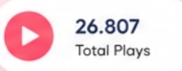
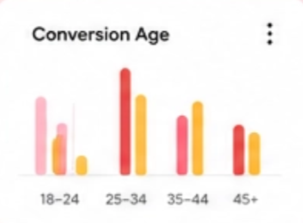
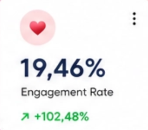

Brand of
Designing
75%
Progress
2.5K
263 contributions in
the last year
4.875
Project Views
last year
vs last year
New Users
57K
+10%
vs last mouth
Team of passionate
designers and
developers


Daily
New clients
54
+10%
vs last mouth



Smart Digital
Agency For Your
Business


Font
Sk-Modernist
View all fonts
We Build Future of
Desgin Industry
Crafting Meaningful UX/UI Desgin